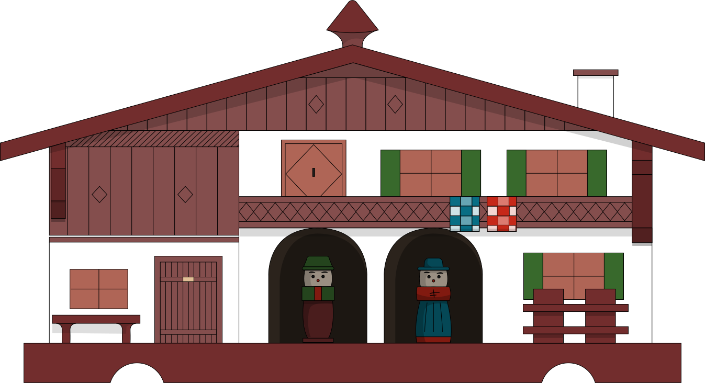

Esse site foi criado — com muito amor — em homenagem à Beatriz Pichler Ricci, mãe e avó querida, que nos deixou dia 26 de abril de 2024.
Em 2007, ela começou um blog de receitas para a familia, no Blogspot; e qual melhor homenagem à essa grande cozinheira que de resgatar os seus textos e de criar com carinho um site só à ela, com a cara dela?
Do pai austríaco, Beatriz herdou um gostinho pelo kitch, e adorava seus bibelôs, que decoravam a casa inteira. Foi uma dessas lembranças da Áustria que inspirou o logo do site: a casinha miniatura de madeira, lembrança de Innsbruck.

Nós usamos Microformats :)